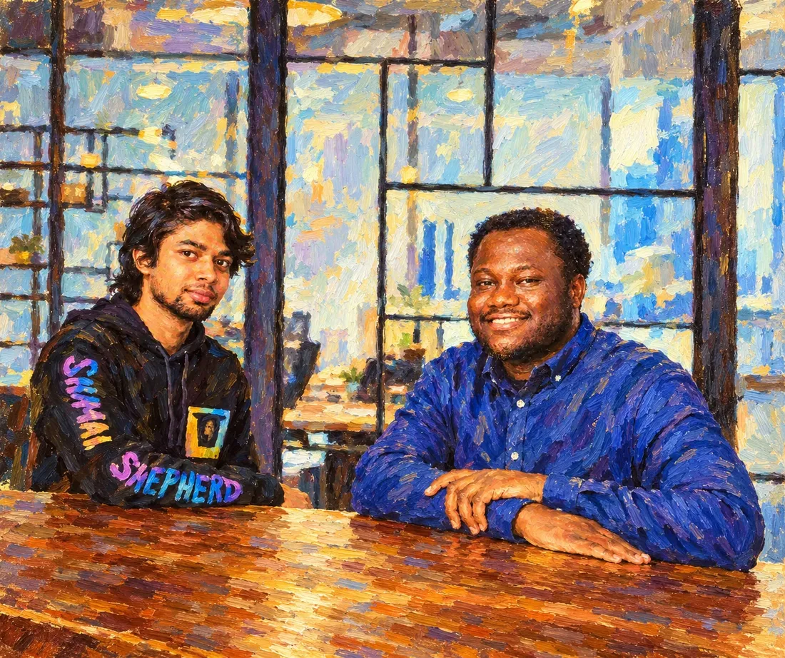

Who we are, and how to join.

Abdulhamid Hassan. Co‑founder and CEO. Studied Computer Systems at Riga Technical University. Founded Mono, the global south’s largest data aggregation company, acquired by Flutterwave.
Prakhar Singh. Co‑founder and CTO. A top 1% coder in India and the youngest Y Combinator alum in 2022. Architected Mono’s data infrastructure, which now processes trillions of data points.
We are technical founders, researchers and systems engineers who have worked in machine learning since 2017, starting with self‑learning agents that learned from human conversations. Most recently we architected Mono, the largest data aggregation company in the global south, backed by Y Combinator, Tiger Global and General Catalyst and acquired by Flutterwave, a $3B financial institution. We believe constraint is an edge. Testing edge systems in Africa, where connectivity is patchy and power is scarce, pushed us to design new kernels and machine systems, and new ways to make inference faster and cheaper.
Join the team
Help us build something that doesn’t exist yet.
We’re assembling a founding team of exceptional engineers and researchers to make large models run in real time, everywhere. We hire in Lagos, in London and remotely.
Head of Engineering & Research
Lead Ogbon’s technical research, develop the computing architecture, manage experiments, and guide the engineering team.
Responsibilities
- Set the research agenda and turn latency targets into a sequence of testable milestones.
- Design the overall architecture across compilation, scheduling, and distributed execution.
- Define how experiments are run, measured, and reported so results can be trusted and reproduced.
- Hire, mentor, and lead the founding engineering and research team.
- Make hard technical tradeoffs, including deciding when an approach should be abandoned.
Requirements
- Deep experience building performance‑critical systems: compilers, runtimes, databases, operating systems, or HPC.
- A strong grasp of computer architecture: caches, SIMD, memory bandwidth, and interconnects.
- A record of leading technically ambitious projects from idea to working system.
- Rigour about measurement and honesty about negative results.
- The ability to explain complex ideas clearly to engineers and non‑specialists.
Senior C++ Engineer
Build high‑performance software and optimise AI model execution on GPUs and edge hardware.
Responsibilities
- Write and optimise the kernels and runtime that execute model operations on GPUs and edge devices.
- Profile hot paths and remove bottlenecks in compute, memory access, and threading.
- Use SIMD instruction sets such as AVX2, AVX‑512, and NEON where they make a measurable difference.
- Build benchmarks and tests that keep performance from regressing.
- Work with research engineers to turn ideas into fast, correct code.
Requirements
- Strong modern C++ (17 or later) and a solid understanding of what the compiler generates.
- Experience with profiling tools such as perf or VTune.
- A clear understanding of caches, memory layout, and multithreading on CPUs and GPUs.
- Experience with numerical or high‑performance code is a strong plus.
- Comfort reading assembly when needed.
Senior Backend Engineer Distributed Systems
Develop distributed systems that coordinate AI workloads across devices, site clusters and city clusters.
Responsibilities
- Design the coordination layer that splits AI workloads between machines and nearby inference clusters.
- Build scheduling, partitioning, and data‑transfer systems with minimal overhead.
- Handle failures, stragglers, and network variability without losing throughput.
- Instrument the system so latency and throughput can be understood end to end.
- Contribute to decisions on protocols, serialisation, and networking.
Requirements
- Experience building distributed systems in production or research settings.
- Strong programming ability in C++, Rust, Go, or a similar systems language.
- A solid grasp of networking fundamentals and bandwidth and latency tradeoffs.
- Familiarity with consensus, replication, or distributed scheduling.
- Clear thinking about correctness under concurrency.
Systems Engineer Linux & Performance
Optimise Linux, latency, memory usage, and parallel execution on inference servers and edge devices.
Responsibilities
- Tune Linux for compute‑heavy workloads: scheduling, NUMA, huge pages, and interrupts.
- Measure and optimise memory usage, cache behaviour, and parallel execution.
- Build tooling that profiles experiments across many machines.
- Investigate performance anomalies down to the kernel and hardware level.
- Document findings so the rest of the team can build on them.
Requirements
- Deep Linux knowledge, including kernel‑level performance concepts.
- Experience with perf, eBPF, flame graphs, or similar tooling.
- An understanding of NUMA, CPU topology, and the memory hierarchy.
- Systems programming and scripting ability in C, C++, Rust, Python, or shell.
- Patience and curiosity for problems nobody has documented yet.
AI/ML Research Engineer
Research efficient AI architectures, model optimisation, quantisation, and real‑time inference.
Responsibilities
- Research model architectures and techniques suited to real‑time inference on GPUs and edge devices.
- Run experiments in quantisation, sparsity, pruning, and distillation.
- Measure accuracy and performance tradeoffs rigorously.
- Work with compiler and systems engineers to make research results run fast.
- Follow the research literature and reproduce promising results.
Requirements
- A strong understanding of how modern neural networks work, especially transformers.
- Experience with PyTorch, JAX, or a similar framework.
- Hands‑on experience with model optimisation techniques such as quantisation.
- Solid foundations in linear algebra and numerical methods.
- The ability to design clean experiments and report results honestly.
Infrastructure Engineer
Build and manage Linux servers, computing clusters, deployment systems, and research infrastructure.
Responsibilities
- Build and operate the Linux servers and clusters used for research.
- Automate provisioning, configuration, and deployment.
- Maintain monitoring, logging, and experiment‑tracking infrastructure.
- Keep the research environment reliable, reproducible, and secure.
- Plan hardware and network capacity with the research team.
Requirements
- Experience administering Linux servers at scale.
- Familiarity with infrastructure‑as‑code tools such as Ansible or Terraform.
- Networking knowledge: switching, routing, and diagnosing throughput problems.
- Experience with monitoring stacks such as Prometheus and Grafana.
- A strong preference for automation over manual work.